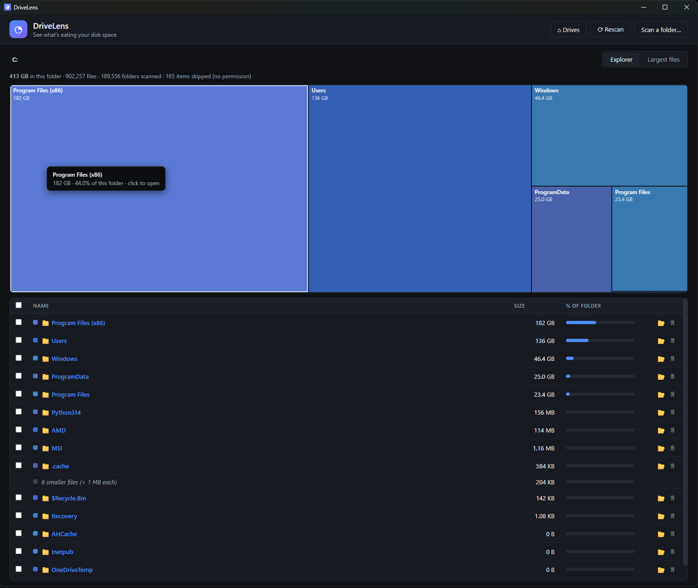
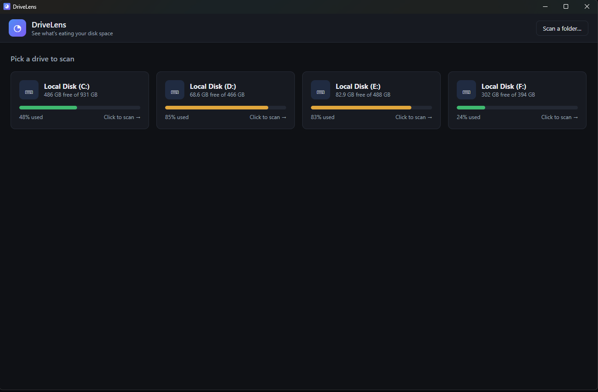
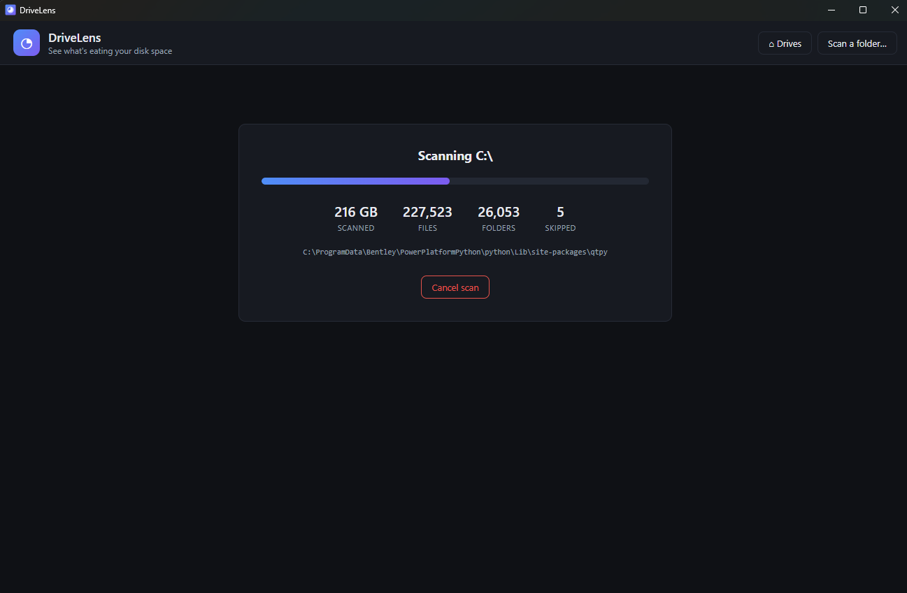
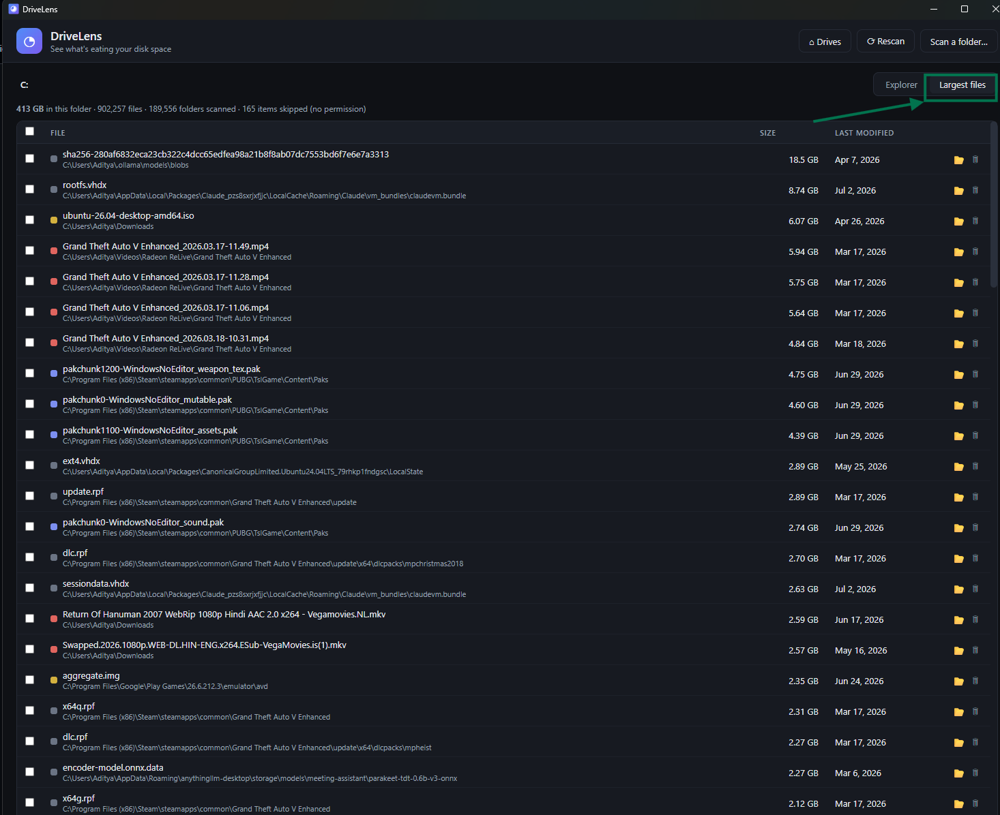
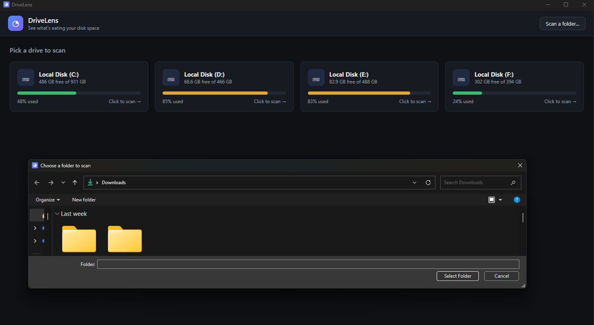

See exactly what's eating your disk space — and clean it up safely. Free, open-source disk analyzer for Windows.
Free & MIT-licensed · or install via winget install drivelens (pending approval)

Windows tells you that you're out of space — DriveLens shows you why, drawn to scale, in seconds.
Every folder and file drawn proportional to its size, color-coded by type. Click to drill in, hover for details. Huge files are impossible to miss.
Scans run in a background thread with live progress — even drives with millions of files stay smooth. Files under 1 MB are grouped so nothing bogs down.
The top 100 biggest files on your drive with last-modified dates — spot the forgotten 8 GB download from two years ago instantly.
Multi-select and delete with full confirmation — everything goes to the Recycle Bin, never permanently removed. System paths get an extra warning.
Zero network access. No telemetry, no accounts, no ads. Your file names never leave your machine — and you can audit the code yourself.
MIT-licensed on GitHub. Build it from source in two commands, file issues, or contribute features and translations.
From drive picker to freed-up gigabytes in a few clicks.




Deleting files needs care. DriveLens is engineered around safety.
One user freed 440 GB in their first session. What's hiding on your drive?
⬇ Download DriveLens — Free